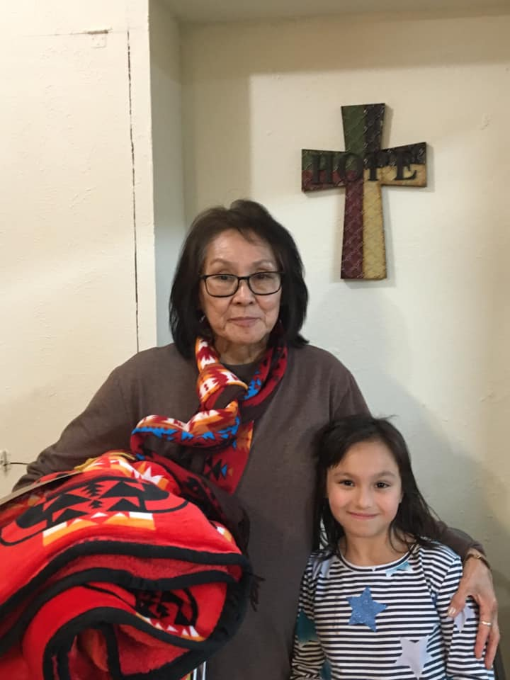
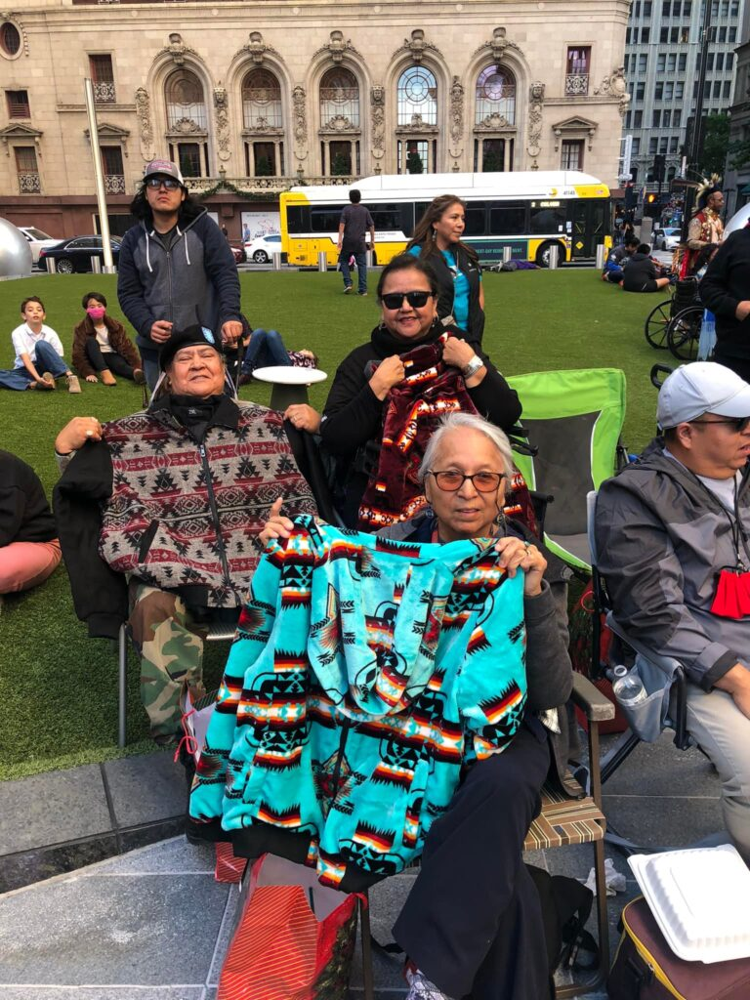
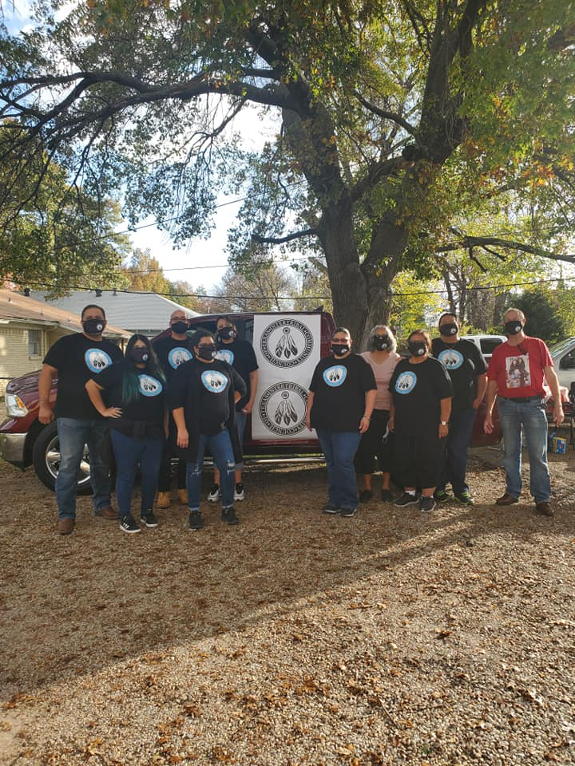

Elder Sharon Cornwell
A moment of connection between generations, reflecting the heart of why this event matters: Honoring those who guide us, nurturing those who will carry our traditions forward.
Honor Our Elders is an annual community gathering hosted by the Intertribal Community Council of Texas (ICCT). This event centers on gratitude, respect, and cultural continuity. It recognizes the wisdom, leadership, and lived experiences of American Indian elders who have carried our stories, traditions, and strength across generations. The gathering provides a shared meal, gifts, cultural activities, and time for connection.
Elders hold a central place in many Native American communities. They are teachers, storytellers, knowledge keepers, and leaders. Honoring them is not just tradition: It is responsibility, reciprocity, and love. This event creates space for cultural connection, community healing, and intergenerational learning.


A moment of connection between generations, reflecting the heart of why this event matters: Honoring those who guide us, nurturing those who will carry our traditions forward.

Elders from across the DFW community gather to share stories, receive gifts, and enjoy a meal in their honor.

In 2019, Nina Taylor put her heart into the first Honor Our Elders ceremony to recognize beloved elders in our DFW area.
A community gathering to open the event by host Nina Taylor, featuring a traditional prayer and welcome address.
Elders will be recognized and honored through a ceremony that includes the distribution of thoughtful gifts made possible through the community and donations. This moment centers on gratitude and acknowledges the leadership and wisdom of our elders.
A catered meal is shared with all attendees, offering time for conversation, connection, and community building. This meal is provided through the generosity of donors and supporters.
The event concludes with a closing prayer and acknowledgments for elders, volunteers, donors, and community partners. This final moment brings the event full circle with gratitude and reflection.
Attendees are invited to stay and engage in informal community time, fostering connections and conversations among participants.

Your support helps ICCT provide meal, gifts, and community programming for Native American elders across the DFW area. Every contribution makes a meaningful difference. Our goal is to raise the full $8,000 it costs to provide this event!
Donate to Support Our Elders